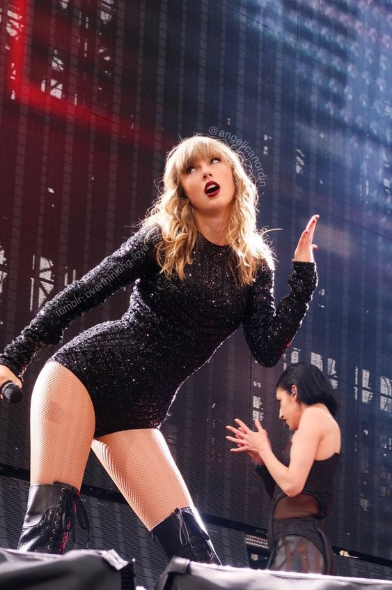
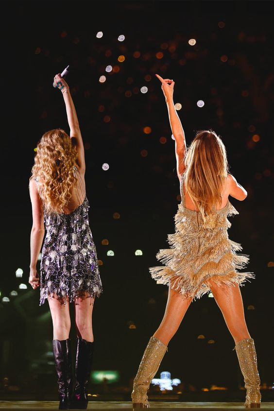
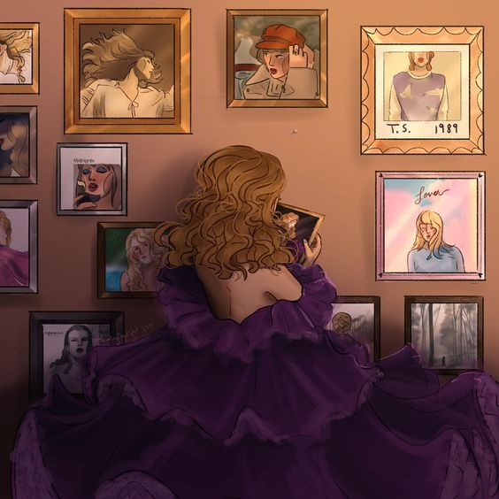
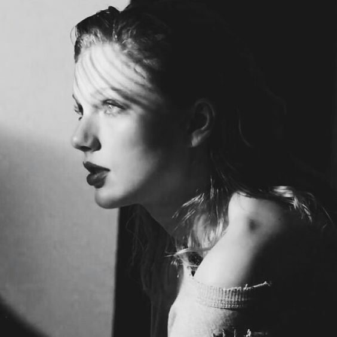

Seção 1

Taylor Alison Swift (Reading, 13 de dezembro de 1989) é uma cantora, compositora, atriz, diretora e roteirista norte-americana. Suas composições narrativas, muitas vezes inspirada pelas suas experiências pessoais, tem recebido ampla cobertura mediática e elogios críticos. Swift mudou-se para Nashville aos 14 anos de idade para se tornar uma cantora de música country, assinando um contrato de composição com a Sony/ATV Music Publishing em 2004 e um contrato de gravação com a Big Machine Records em 2005 e com a Republic Records em 2019.
Seu álbum de estreia autointitulado de 2006 se tornou o álbum mais longo dos anos 2000 a permanecer na parada de música da Billboard, a Billboard 200. Seu terceiro single, "Our Song", fez dela a cantora e compositora mais jovem a alcançar o número um na Billboard Hot Country Songs. O segundo álbum de estúdio de Swift, Fearless (2008), ganhou quatro prêmios Grammy e produziu os single "Love Story" e "You Belong with Me". Tornou-se o álbum mais vendido de 2009 nos Estados Unidos e foi certificado com disco de platina pela RIAA. O terceiro álbum auto-escrito de Swift, Speak Now (2010), gerou o single vencedor do Grammy "Mean", o álbum recebeu muitas avaliações positivas por parte da crítica musical, registrando uma média de 77 pontos de aprovação no agregador de resenhas Metacritic. Seu quarto álbum de estúdio, Red (2012), deu a ela seu primeiro single número um na Billboard Hot 100, "We Are Never Ever Getting Back Together". Em seu primeiro dia de vendas, assumiu a liderança da iTunes Store de diversos países, inclusive a do Brasil. Seu quinto álbum de estúdio e seu primeiro projeto totalmente pop, 1989 (2014), lançou os singles número um, na Billboard Hot 100, "Shake It Off", "Blank Space" e "Bad Blood", e ganhou três prêmios Grammy - incluindo o de Álbum do Ano - tornando Swift a primeira mulher a ter sucesso no primeiro lugar no Hot 100 e a primeira mulher a ganhar o Álbum do Ano duas vezes como artista principal.
Seu sexto álbum de estúdio, com influências de hip hop, Reputation (2017), fez dela a primeira e única artista na história da música a ter quatro álbuns vendendo mais de um milhão de cópias em sua primeira semana nos EUA e gerou seu quinto single número um do Hot 100, "Look What You Made Me Do". Seu sétimo álbum de estúdio, Lover (2019), bateu o recorde das entradas simultâneas do Hot 100 por uma artista feminina e se tornou o álbum de estúdio mais vendido em 2019. Lover e seus singles receberam três indicações no Grammy Awards de 2020, incluindo Melhor Álbum Vocal Pop, sendo esta a terceira indicação consecutiva da cantora na categoria, após 1989 e Reputation. Um dia antes do lançamento, Taylor anunciou seu oitavo álbum de estúdio, Folklore (2020), que se tornou, de acordo com o Guinness World Records, o álbum por uma artista feminina com mais reproduções em seu primeiro dia no Spotify, e três das suas faixas atingiram o top 10 das tabelas oficiais em oito países. Evermore, nono álbum de estúdio da cantora, foi lançado em 11 de dezembro de 2020, pela Republic Records, poucos meses após o lançamento do oitavo álbum. Todas as 15 faixas do álbum entraram na parada Billboard Hot 100 na mesma semana, lideradas pelo primeiro single, "Willow", mais de um milhão de cópias de Evermore foram vendidas globalmente em sua primeira semana.
Tendo vendido mais de 50 milhões de álbuns e 150 milhões de singles mundialmente, Swift é um das artistas de música mais vendidos no mundo de todos os tempos. Seus prêmios incluem 10 Grammy Awards, um Emmy Award e sete recordes no Guinness World Records; ela é a artista e mulher mais premiada no American Music Awards (29 vitórias) e no Billboard Music Awards (23 vitórias), respectivamente. Ela foi incluída em vários rankings, como a lista anual da revista Time das 100 pessoas mais influentes do mundo (2010, 2015 e 2019), os 100 maiores compositores de todos os tempos da revista Rolling Stone (2015), a Forbes Celebrity 100 (primeira colocada em 2016 e 2019), o Melhor Artista de Charts de Todos os Tempos da revista Billboard (em oitavo lugar). Ela foi nomeada Artista de Gravação Global do Ano duas vezes pela Federação Internacional da Indústria Fonográfica (IFPI) (2014 e 2019), Mulher da Década (2010s) pela revista Billboard e Artista da Década (2010s) pelo American Music Awards
Seção 2
Em agosto de 2017, Swift processou e venceu um julgamento civil contra David Mueller, uma ex-personalidade de programa matutino da KYGO-FM de Denver. Quatro anos antes, Swift informara os chefes de Mueller de que ele a atacara sexualmente, apalpando-a em um evento. Depois de ser demitido, Mueller acusou Swift de mentir e processou-a por fazê-lo perder o emprego. Pouco depois, Swift contra-processou por agressão sexual. O júri rejeitou as alegações de Mueller e decidiu em favor de Swift. Swift depois limpou suas contas de redes social e lançou "Look What You Made Me Do" como o single principal de seu sexto álbum, Reputation. A canção liderou as paradas na Austrália, Irlanda, Nova Zelândia, Reino Unido e Estados Unidos. Seu videoclipe ganhou mais de 43,2 milhões de visualizações durante seu primeiro dia no YouTube, quebrando o recorde do site de videoclipe mais visto em 24 horas. Em outubro, Swift lançou o segundo single do álbum, "...Ready for It?", que ficou em terceiro lugar na Austrália e em número quatro nos Estados Unidos. Dois singles promocionais foram lançados do Reputation, "Gorgeous" e "Call It What You Want". "Gorgeous" mais tarde se tornou o quinto single do álbum na Europa. O álbum foi lançado em novembro e vendeu 1,21 milhão de cópias nos Estados Unidos, tornando-se o álbum mais vendido do país em 2017. Com essa conquista, ela se tornou o primeiro ato a ter quatro álbuns que vendem um milhão de cópias em uma semana nos EUA O álbum liderou as paradas em vários países, incluindo EUA, Reino Unido, Austrália e Canadá. As vendas mundiais da primeira semana totalizaram dois milhões de cópias. Reputation viu Swift tomar uma nova direção, musicalmente; o álbum é conhecido por seu som mais urbano e influências de hip hop e EDM. Mais tarde naquele mês, Swift tocou "... Ready for It?" e "Call It What You Want" no Saturday Night Live. "End Game", com Ed Sheeran e o rapper Future, seguiu em novembro como o terceiro single e alcançou o número 18 nos EUA Outros singles do álbum incluem "New Year's Day", lançado exclusivamente para a rádio country, e o hit "Delicate". Em abril de 2018, Swift apareceu em "Babe", do Sugarland. Em apoio à Reputation, ela embarcou em sua aclamada pela crítica Reputation Stadium Tour de maio a novembro de 2018. A turnê quebrou vários recordes de presença no local e ganhos brutos nos EUA, recebendo US$ 266,1 milhões e vendendo mais de dois milhões de ingressos. Swift quebrou seu próprio recorde para a turnê doméstica de maior bilheteria por uma mulher, bem como o recorde da turnê norte-americana de maior bilheteria da história. Em todo o mundo, a turnê arrecadou US$ 345,7 milhões, fazendo dela a segunda turnê de concertos com maior bilheteria do ano. No American Music Awards de 2018, Swift venceu a Turnê do Ano, Artista do Ano, Artista Feminina Pop/Rock Favorita e Álbum Pop/Rock Favorito. Com um total de 23 prêmios, ela se tornou a artista feminina mais premiada da história do AMA, um recorde anteriormente mantido por Whitney Houston.
Seção 3

O segundo álbum de estúdio de Swift, Fearless, foi lançado em 11 de novembro de 2008. O single principal, "Love Story", foi lançado em setembro de 2008. Chegou ao número quatro na Billboard Hot 100 e número um na Austrália. Mais quatro singles foram lançados ao longo de 2008 e 2009: "White Horse","You Belong with Me", "Fifteen" e "Fearless". "You Belong With Me" foi o single com maior número de álbuns na Billboard Hot 100, alcançando o número dois. O álbum estreou no número um na Billboard 200 e foi o álbum mais vendido de 2009 nos Estados Unidos. A primeira turnê de shows de Swift, a Fearless Tour, promoveu o álbum e arrecadou mais de US$ 63 milhões. Journey to Fearless, uma minissérie de documentários em três partes, foi ao ar na televisão e depois lançado em DVD e Blu-ray. Swift também se apresentou como um ato de abertura à turnê mundial Escape Together de Keith Urban.
No Grammy Awards de 2010, Fearless foi nomeado em Álbum do Ano e Melhor Álbum Country, e "White Horse" foi nomeado em Melhor Canção Country e Melhor Performance Vocal Country Feminina. Swift foi o artista mais jovem a vencer o prêmio de Álbum do Ano. Durante a cerimônia, Swift cantou "You Belong With Me" e "Rhiannon" com Stevie Nicks, uma performance que recebeu críticas negativas e causou reação da mídia. Jon Caramanica, do The New York Times, considerou "refrescante ver alguém tão talentoso fazer um palavrão ocasional" e descreveu Swift como "a nova estrela pop mais importante dos últimos anos". Swift se tornou o artista mais jovem a ser nomeado Artista do Ano pela Country Music Association (CMA). Fearless também ganhou o prêmio CMA Album of the Year.
Swift contribuiu com os vocais de apoio de "Half of My Heart", de John Mayer, um single de seu quarto álbum, Battle Studies (2009). Ela co-escreveu e gravou "Best Days of Your Life" com Kellie Pickler, e co-escreveu duas músicas para a trilha sonora de Hannah Montana: O Filme - "You'll Always Find Your Way Back Home" e "Crazier". Swift também forneceu vocais para "Two Is Better Than One", do Boys Like Girls. Ela contribuiu com duas músicas para a trilha sonora do filme Valentine's Day, incluindo a música country "Today Was a Fairytale", que se tornou seu primeiro número um na parada Canadian Hot 100 e sua segunda música número dois nos EUA Enquanto filmava sua estreia cinematográfica no filme Valentine's Day em outubro de 2009, Swift iniciou um relacionamento romântico com a co-estrela Taylor Lautner; eles terminaram no final daquele ano. A comédia romântica, lançada em 2010, a viu interpretar a namorada chique de um atleta do ensino médio, um papel que o Los Angeles Times sentiu que mostrava que Swift tinha "um sério potencial cômico". Por outro lado, em uma crítica contundente, um crítico da Variety a considerou "totalmente não direcionada", argumentando que "ela precisa encontrar um diretor qualificado para reprimi-la e canalizar sua energia obviamente abundante".
Swift fez sua estreia na TV em um episódio de 2009 de CSI: Crime Scene Investigation da CBS, interpretando uma adolescente rebelde. O New York Times observou que o personagem permitiu que Swift fosse "um pouco travesso e com credibilidade". Mais tarde naquele ano, Swift apresentou e se apresentou como convidado musical em um episódio do Saturday Night Live e foi o primeiro anfitrião a escrever seu próprio monólogo de abertura. Em sua aparição, o programa teve a maior audiência em dois meses. A Entertainment Weekly a descreveu como "a melhor apresentadora do Saturday Night Live desta temporada até agora", observando que "ela estava sempre pronta para o desafio, parecia estar se divertindo e ajudou o resto do elenco a acertar as piadas".
Seção 4

The Eras Tour (ou Taylor Swift: The Eras Tour) é a sexta turnê em curso da cantora e compositora estadunidense Taylor Swift, assim como a sua segunda turnê em estádios após a Reputation Stadium Tour (2018). Incapaz de promover os seus álbuns de estúdio Lover (2019), Folklore (2020) e Evermore (2020) por conta da pandemia de COVID-19, ela está embarcando na The Eras Tour em apoio a toda sua discografia, incluindo seu último lançamento, Midnights (2022). A turnê foi oficialmente anunciada em 1 de novembro de 2022, sendo iniciada no dia 17 de março de 2023 em Glendale, Arizona. Até o momento, foram confirmados 71 concertos em estádios na América do Norte, sendo sessenta e dois nos Estados Unidos e nove no Canadá, além de 13 na América Latina: quatro no México, três na Argentina e seis no Brasil (três no Rio de Janeiro e três em São Paulo). Também foram adicionados 10 concertos na Ásia (Japão e Singapura), 7 na Oceania (Austrália) e 50 na Europa. Com um total de 151 apresentações, a turnê se tornou a maior de Taylor em número de concertos, superando a Fearless Tour que detinha esse recorde (118).
Anunciada após o lançamento de seu décimo álbum de estúdio, Midnights (2022), a The Eras Tour começou em 17 de março de 2023, em Glendale, Estados Unidos, e deve terminar em 8 de dezembro de 2024, em Vancouver, Canadá. O show dura mais de três horas, com um set list de 44 músicas divididas em 10 atos distintos que retratam conceitualmente os álbuns. Recebeu aclamação unânime da crítica, com ênfase no conceito, produção, estética, musicalidade, vocais, resistência e versatilidade de Taylor. Swift lançou vários trabalhos durante a turnê: edições estendidas de Midnights, os álbuns regravados Speak Now (Taylor's Version) e 1989 (Taylor's Version) e os videoclipes de "Karma", "I Can See You" e "Cruel Summer" como single.
Publicações descreveram a The Eras Tour como um fenômeno cultural, relatando seu impacto multifacetado. A turnê teve uma demanda sem precedentes, quebrando recordes de vendas de ingressos e locais em todo o mundo. A turnê elevou economias, negócios e turismo, atraiu grandes multidões de espectadores além dos estádios, dominou os ciclos de notícias e mídias sociais e inspirou homenagens de vários governos e organizações.
Seção 5

Entre os apelidos honoríficos usados para descrever Swift estão "Titã do Pop" e "Rainha do Country". Ela foi creditada por ajudar a música country a se tornar mais popular em todo o mundo, com a Billboard escrevendo que "o cenário do país é muito diferente hoje, em parte graças a Swift e sua insistência em seguir um plano de jogo que muitos consideravam pouco ortodoxo" e notou as opiniões favoráveis em relação ao gênero desde a sua estreia. Segundo a BBC, Swift é responsável por abrir o caminho para os artistas de crossover "que não desejam mais ser do gueto em gêneros musicais arbitrariamente separados" e potencialmente "inaugurar uma nova era de interação individual com os fãs". A Rolling Stone opinou que, porque Swift "trabalhou tanto ao falar sua verdade" através de suas composições, ela "ajudou a abrir um espaço" para muitas artistas femininas "aparecerem tão facilmente" com suas músicas em uma era de tabloides. A Billboard também informou que após a ascensão de Swift à fama, as gravadoras se interessaram mais em contratar jovens cantores e artistas que escrevem suas próprias músicas. A empresa de fabricação de guitarras Fender considerou o "fator Taylor Swift" responsável pelo fenômeno mundial que viu jovens mulheres impulsionando 50% das vendas de novas guitarras Swift é considerado um dos artistas que ressurgiram os ukuleles na música moderna. Ela foi creditada como uma das artistas-chave no aumento da receita da indústria da música para US$ 20 bilhões em 2019, um valor não visto desde 2005. Swift foi descrita como uma das "poucas artistas pop" de sua época que "pode lotar estádios de forma confiável, não importa quantos álbuns ela venda ou quantos singles número 1 ela lance".
Swift é conhecido por trazer reformas ao mercado da música de streaming e foi nomeada "uma das principais defensoras dos direitos de artistas e compositores". Ela é creditada por ajudar a aumentar as vendas de álbuns tradicionais na era do streaming; O Quartz reconheceu Swift como a única artista "que ainda vende CDs" em 2019. Em novembro de 2014, ela removeu todo o catálogo do serviço de streaming Spotify, argumentando que o serviço gratuito suportado por anúncios prejudicou o serviço premium, que oferece royalties mais altos para compositores. Em uma carta aberta de junho de 2015, Swift criticou a Apple Music por não oferecer royalties a artistas durante o período experimental gratuito de três meses e disse que retiraria o 1989 do catálogo. No dia seguinte, a Apple anunciou que pagaria aos artistas durante o período de teste gratuito e Swift concordou em manter o 1989 em seu serviço de streaming. Hugh McIntyre, escrevendo para a Forbes, elogiou Swift por usar sua voz para se opor a uma grande empresa e que isso importava mais do que qualquer outra pessoa ou organização. Ela relançou todo o seu catálogo para várias das principais plataformas de streaming em junho de 2017. Em seu contrato de gravação de 2018 com a Universal Music Group, Swift garantiu à gravadora que qualquer venda de suas ações do Spotify resultaria em pagamentos não recuperáveis a todos os artistas em sua lista. Swift também é uma dos defensoras dos direitos dos artistas de exercer maior controle sobre sua música, especialmente no que diz respeito à propriedade de gravações. Ela condenou o "mundo não regulamentado do private equity", que é "comprar nossa música como se fosse uma propriedade", afirmando veementemente que os criadores "mereciam ser donos da arte que fazem". Além disso, ela foi rotulada como um "ícone feminista" por seus esforços consistentes em defender a igualdade de gênero e falar sobre a misoginia e o sexismo internalizado.
Em homenagem aos dois shows consecutivos de Swift no U.S. Bank Stadium em Minneapolis, Minnesota, o governador Mark Dayton, declarou 31 de agosto de 2018 como o "Taylor Swift Day" no estado, elogiando-a como "uma influência positiva para seus fãs por meio de seu exemplo de veracidade, graça, filantropia extensa e força de caráter". Em 2019, Swift foi nomeada Mulher da Década pela Billboard por ser "um dos artistas musicais mais talentosos de todos os tempos ao longo dos anos 2010". Ela foi homenageada como Artista da Década no American Music Awards de 2019, bem como por várias mídias. A Vulture afirmou que Swift "inclinou a indústria da música à sua vontade" com sucesso comercial, composição, passos que ela deu para o feminismo e o empoderamento feminino, e ativismo dentro da indústria da música, defendendo os direitos dos artistas, sendo o "jogador mais experiente" dos anos de 2010. Ela foi listada como uma das artistas mais influentes da década pela CNN por "ultrapassar as fronteiras do country e do pop e lutar pelos direitos de sua música". A Vogue a considerou uma das maiores influenciadoras de moda sustentável do mundo. Swift tem ampla influência nas mídias sociais; foi creditada com o ressurgimento das câmeras Polaroids e Instax depois de apresentar uma fotografia instantânea na capa do 1989 e sua parceria de 2018 com a Fujifilm, respectivamente. Swift também liderou um aumento maciço nos registros de eleitores estadunidenses no Vote.org após seus endossos políticos em 2018.